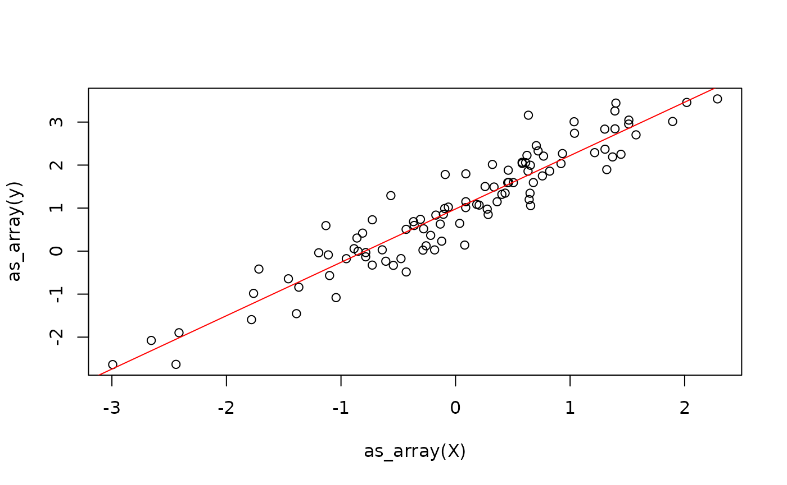

{anvl} is a package for writing numerical code in R that runs fast, on the CPU or a GPU. Programs are ordinary R functions that operate on arrays, and {anvl} adds two things on top: it can compile a function so that it runs much faster than the R interpreter would run it, and it can compute the gradients of a function automatically. In return, the code has to be written in a slightly more restricted style than usual R code. In this article, you will learn the basics by fitting a linear model. If you have experience with JAX in Python, you should feel right at home.
When to Use {anvl}
{anvl} is not a general replacement for base R. Every call into {anvl} has a small fixed overhead, and a function has to be compiled before it runs fast, which is only worth it if the work being done is large enough. {anvl} excels at:
- Computations on large arrays, e.g. linear algebra on big matrices or elementwise operations on millions of values.
- Functions that are called many times with inputs of the same shape, such as a step of an optimization algorithm, a simulation, or an MCMC sampler, where the compilation cost is paid only once.
- Algorithms that need gradients, such as fitting models by gradient descent.
- Computations that should run on a GPU.
In contrast, base R is usually the better choice for small, one-off computations on short vectors, where the overhead of {anvl} dominates, and for tasks such as data wrangling, string processing, or operations whose result size depends on the data (such as filtering), which {anvl} does not target.
The AnvlArray
The main data structure of {anvl} is the AnvlArray. It
is essentially like an R array, with some differences:
- The precision of the numbers can be chosen, e.g. 32-bit or 64-bit floats, and there are more integer types, such as unsigned integers.
- An array can live on the CPU or on a GPU, which is called its device.
- A scalar is an array with no axes, not a vector of length 1.
An AnvlArray is created from R data using
nv_array(). Like most functions in {anvl}, its name starts
with nv_, which is short for anvl. Below,
we create a scalar that holds a 16-bit integer living on the CPU.
## AnvlArray
## 1
## [ CPUi16{} ]For scalars, nv_scalar() is a shorthand that does not
require specifying the shape. The device can also be omitted, in which
case the default device is used. This is the CPU, unless configured
otherwise via the anvl.default_device option.
with_default_device() and
local_default_device() change it temporarily, and
default_device() reports the current one.
x <- nv_scalar(1L, dtype = "i16")
x## AnvlArray
## 1
## [ CPUi16{} ]Here, we create a 2x3 array:
## AnvlArray
## 1 3 5
## 2 4 6
## [ CPUf32{2,3} ]Terminological remark: In {anvl}, we do not speak of the “dimensions” of an array, because the term is ambiguous. Instead, we say that
yhas two axes, where axis1has size 2 and axis2has size 3. The vector of axis sizes, herec(2, 3), is the shape of the array.
Without a specified data type, R doubles become
f32 (32-bit floats) and R integers become
i32. Base R, in contrast, always computes with 64-bit
doubles, so results are less precise. In exchange, computations use half
the memory and are faster, especially on GPUs. Where double precision is
needed, the default can be changed via the
anvl.default_dtypes option. Below,
with_default_dtypes() changes it temporarily:
## AnvlArray
## 2
## [ CPUi64{} ]
## AnvlArray
## 3.1416
## [ CPUf64{} ]The properties of an array can be queried with getter functions:
dtype(y)## <f32>
shape(y) # or dim()## [1] 2 3
device(y)## <CpuDevice(id=0)>To continue working with the results in R, e.g. to plot them,
as_array() converts an array back to an R object. For
scalars, the result is an R vector of length 1. Because R has fewer data
types than {anvl}, the values are converted to the closest R type:
floats become doubles, most integers become
integers, and integers that do not fit into an R
integer, such as 64-bit integers, become
bit64::integer64. See ?as_array for the full
list of conversions.
as_array(y)## [,1] [,2] [,3]
## [1,] 1 3 5
## [2,] 2 4 6Computing with Arrays
Arrays are transformed with the nv_<op> functions,
such as nv_add() or nv_matmul(), or through
the usual R operators and functions like +,
%*%, or sum(). An overview of all of them is
in the API
Functions reference.
nv_add(y, x)## AnvlArray
## 2 4 6
## 3 5 7
## [ CPUf32{2,3} ]
y + x## AnvlArray
## 2 4 6
## 3 5 7
## [ CPUf32{2,3} ]Let’s use this to write a function that computes the predictions of a
linear model \(y = X \beta + \alpha\).
We could also use %*% and + here, but use the
nv_* functions to make clear that {anvl} is doing the
work.
We simulate some data from a linear model and randomly initialize the parameters that we’ll fit later.
X <- matrix(rnorm(100), ncol = 1)
beta_true <- rnorm(1)
alpha_true <- rnorm(1)
y <- X %*% beta_true + alpha_true + rnorm(100, sd = 0.5)
plot(X, y)
X <- nv_array(X, dtype = "f32")
y <- nv_array(y, dtype = "f32")
beta <- nv_array(rnorm(1), shape = c(1, 1), dtype = "f32")
alpha <- nv_scalar(rnorm(1), dtype = "f32")
y_hat0 <- linear_model_r(X[1:2, ], beta, alpha)
y_hat0## AnvlArray
## 3.6654
## 1.3981
## [ CPUf32{2,1} ]So far, every operation ran immediately, one after the other, just like in normal R code. This is called eager execution. It is convenient for trying things out, but it is not where {anvl}’s speed comes from.
Just In Time Compilation
When R runs a function, it evaluates one expression at a time, and every operation on an array is executed on its own. Each of these steps has a small overhead, and no step knows about the others, so nothing can be optimized across them.
jit() changes this: it turns a function into a compiled
program. On the first call, {anvl} translates the whole function into a
single optimized executable and caches it. Later calls with inputs of
the same shape and data type run that executable directly, without going
through the R interpreter. This makes the first call slower, but all
subsequent ones much faster.
linear_model <- jit(linear_model_r)
y_hat1 <- linear_model(X[1:2, ], beta, alpha)
all(y_hat0 == y_hat1)## AnvlArray
## 1
## [ CPUbool{} ]The jitted function takes the same arguments and returns the same
results1,
so wrapping a function in jit() is usually all it takes to
make it faster. The compiler behind this is XLA, which also powers TensorFlow and
JAX.
There is one rule to follow: the function should only compute its
result from its inputs, and not have side effects. See the tracing contract section of the
JIT deep dive for details on how to avoid unpleasent surprises with
jit().
We also define a jitted function that computes the mean squared error of the predictions:
## AnvlArray
## 1.3679
## [ CPUf32{} ]Jitted functions can be freely built out of other jitted functions. {anvl} then compiles them together into one program.
model_loss <- jit(function(X, beta, alpha, y) {
y_hat <- linear_model(X, beta, alpha)
mse(y_hat, y)
})
model_loss(X, beta, alpha, y)## AnvlArray
## 1.3679
## [ CPUf32{} ]To learn more about how jit() works, see the JIT Deep Dive article. For advice on when jitting
pays off, see the Efficiency article.
Automatic Differentiation
Many numerical methods, such as fitting a model by gradient descent,
need the gradient of a function. With {anvl}, it does not have to be
derived by hand: gradient() computes it from the function
itself. We use it to fit the linear model to the data we simulated
earlier – although one would usually fit a linear model by solving the
normal equations, of course.
Below, we get the gradient of model_loss with respect to
the parameters beta and alpha.
model_loss_grad takes the same arguments as
model_loss, but returns a named list with one gradient per
parameter:
model_loss_grad <- jit(gradient(
model_loss,
wrt = c("beta", "alpha")
))
model_loss_grad(X, beta, alpha, y)## $beta
## AnvlArray
## -0.0792
## [ CPUf32{1,1} ]
##
## $alpha
## AnvlArray
## 2.1543
## [ CPUf32{} ]For more on gradient(), see the Automatic Differentiation article.
Now we can write a gradient descent step that updates the parameters.
We keep them together in a weights list, as jitted
functions can take and return (nested) lists of arrays:
update_weights <- jit(function(X, weights, y, lr) {
grads <- model_loss_grad(X, weights$beta, weights$alpha, y)
list(
beta = weights$beta - lr * grads$beta,
alpha = weights$alpha - lr * grads$alpha
)
})Calling it repeatedly fits the model:
weights <- list(beta = beta, alpha = alpha)
lr <- 0.1
for (i in 1:100) {
weights <- update_weights(X, weights, y, lr)
}
Next Steps
For what to watch out for when writing larger programs, such as static arguments, control flow, random numbers, and debugging, continue with the Next Steps article.